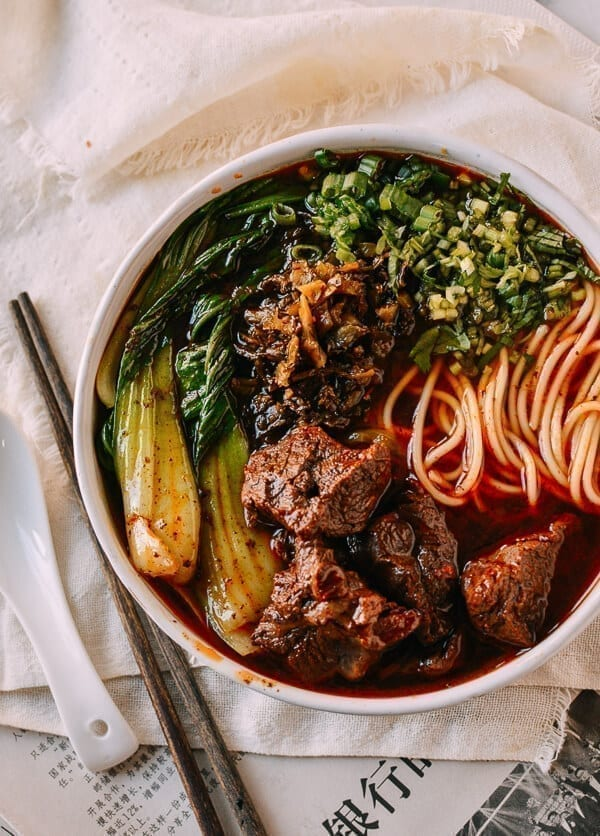

Beef Noodle Soup

Description
First, let’s talk about what Taiwanese Beef Noodle Soup is. It’s delicious.
Tender beef, a rich and slightly spicy broth, fresh noodles, a little bok choy,
and that absolutely necessary fistful of Chinese pickled mustard greens
along with fresh scallions and cilantro.
Ingredients
- 1 pound cubed beef stew meat
- 1 cup chopped onion
- 1 cup chopped celery
- ¼ cup beef bouillon granules
- ¼ teaspoon dried parsley
- 1 pinch ground black pepper
- 1 cup chopped carrots
- 5¾ cups water
- 2½ cups frozen egg noodles
Steps
- In a large saucepan over medium high heat, saute the stew meat,
onion and celery for 5 minutes, or until meat is browned on all sides.
- Stir in the bouillon, parsley, ground black pepper, carrots,
water and egg noodles. Bring to a boil, reduce heat to low and simmer
for 30 minutes.